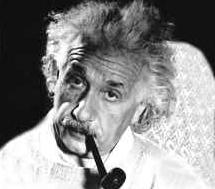

Einstein, Albert (1879-1955), físico alemán nacionalizado estadounidense, premiado con un Nobel, famoso por ser el autor de las teorías general y restringida de la relatividad y por sus hipótesis sobre la naturaleza corpuscular de la luz. Es probablemente el científico más conocido del siglo XX
Nació en Ulm el 14 de marzo de 1879 y pasó su juventud en Munich, donde su familia poseía un pequeño taller de máquinas eléctricas. Ya desde muy joven mostraba una curiosidad excepcional por la naturaleza y una capacidad notable para entender los conceptos matemáticos más complejos. A los doce años ya conocía la geometría de Euclides.
A la edad de 15 años, cuando su familia se trasladó a Milán, Italia, a causa de sucesivos fracasos en los negocios, Einstein abandonó la escuela. Pasó un año con sus padres en Milán y viajó a Suiza, donde terminó los estudios secundarios e ingresó en el Instituto Politécnico Nacional de Zurich.
Durante dos años Einstein trabajó dando clases particulares y de profesor suplente. En 1902 consiguió un trabajo estable como examinador en la Oficina Suiza de Patentes en Berna.
En 1905 se doctoró en la Universidad de Zurich, con una tesis sobre las dimensiones de las moléculas; también publicó cuatro artículos teóricos de gran valor para el desarrollo de la física del siglo XX. En el primero de ellos, sobre el movimiento browniano, formuló predicciones importantes sobre el movimiento aleatorio de las partículas dentro de un fluido, predicciones que fueron comprobadas en experimentos posteriores. El segundo artículo, sobre el efecto fotoeléctrico, anticipaba una teoría revolucionaria sobre la naturaleza de la luz. Según Einstein, bajo ciertas circunstancias la luz se comportaba como una partícula. También afirmó que la energía que llevaba toda partícula de luz, denominada fotón, era proporcional a la frecuencia de la radiación. Lo representaba con la fórmula E = hu, donde E es la energía de la radiación, h una constante universal llamada constante de Planck y u es la frecuencia de la radiación. Esta teoría, que planteaba que la energía de los rayos luminosos se transfería en unidades individuales llamadas cuantos, contradecía las teorías anteriores que consideraban que la luz era la manifestación de un proceso continuo. Las tesis de Einstein apenas fueron aceptadas. De hecho, cuando el físico estadounidense Robert Andrews Millikan confirmó experimentalmente sus tesis casi una década después, éste se mostró sorprendido e inquieto por los resultados.
Einstein, interesado por comprender la naturaleza de la radiación electromagnética, propugnó el desarrollo de una teoría que fusionara las ondas y partículas de la luz. De nuevo fueron muy pocos los científicos que comprendieron y aceptaron estas ideas.
La tercera publicación de Einstein en 1905, Sobre la electrodinámica de los cuerpos en movimiento, y la cuarta titulada ¿Depende la inercia de un cuerpo de la energía que contiene?, formulaban lo que después llegó a conocerse como la teoría especial de la relatividad (o teoría restringida de la relatividad). Desde los tiempos del matemático y físico inglés Isaac Newton, los filósofos de las ciencias naturales (nombre que recibían los físicos y químicos) habían intentado comprender la naturaleza de la materia y la radiación, y su interacción en algunos modelos unificados del mundo. La hipótesis que sostenía que las leyes mecánicas eran fundamentales se denominó visión mecánica del mundo. La hipótesis que mantenía que eran las leyes eléctricas las fundamentales recibió el nombre de visión electromagnética del mundo. Ninguna de las dos concepciones era capaz de explicar con fundamento la interacción de la radiación (por ejemplo, la luz) y la materia al ser observadas desde diferentes sistemas de inercia de referencia, o sea, la interacción producida en la observación simultánea por una persona parada y otra moviéndose a una velocidad constante.
En la primavera de 1905, tras haber reflexionado sobre estos problemas durante diez años, Einstein se dio cuenta de que la solución no estaba en la teoría de la materia sino en la teoría de las medidas. En el fondo de su teoría restringida de la relatividad se encontraba el hallazgo de que toda medición del espacio y del tiempo es subjetiva. Esto le llevó a desarrollar una teoría basada en dos premisas: el principio de la relatividad, según el cual las leyes físicas son las mismas en todos los sistemas de inercia de referencia, y el principio de la invariabilidad de la velocidad de la luz, según el cual la velocidad de la luz en el vacío es constante. De este modo pudo explicar los fenómenos físicos observados en sistemas de inercia de referencia distintos, sin tener que entrar en la naturaleza de la materia o de la radiación y su interacción, pero nadie entendió su razonamiento.
En su cuarto artículo, Einstein dedujo la famosísima fórmula E = m·c2 que relaciona la energía (E) con la masa (m) y la velocidad de la luz (c). Como el valor de c es muy elevado, una pequeña masa equivale a una gran cantidad de energía.
La dificultad de otros científicos para aceptar la teoría de Einstein no estribaba en sus complejos cálculos matemáticos y su dificultad técnica, sino que partía del concepto que tenía Einstein de las buenas teorías y su relación con la experimentación. Aunque sostenía que la única fuente del conocimiento era la experiencia, también pensaba que las teorías científicas eran creaciones libres de una aguda intuición física, y que las premisas en que se basaban no podían aplicarse de un modo lógico al experimento. Una buena teoría sería, pues, aquella que necesitara los mínimos postulados para explicar un hecho físico. Esta escasez de postulados, característica de la obra de Einstein, provocó que su trabajo no fuera accesible para sus colegas, que le dejaron solo.
Aun así, tenía importantes seguidores. Su primer defensor fue el físico alemán Max Planck. Einstein permaneció cuatro años en la oficina de patentes, y luego empezó a destacar dentro de la comunidad científica, y así ascendió en el mundo académico de lengua alemana. Primero fue a la Universidad de Zurich en 1909; dos años más tarde se trasladó a la Universidad de Praga, de lengua alemana, y en 1912 regresó al Instituto Politécnico Nacional de Zurich. Finalmente, en 1913 fue nombrado director del Instituto de Física Kaiser Guillermo en Berlín.
La teoría general de la relatividad
Antes de dejar la oficina de patentes, en 1907, Einstein ya trabajaba en la extensión y generalización de la teoría de la relatividad a todo sistema de coordenadas. Empezó con el enunciado del principio de equivalencia según el cual los campos gravitacionales son equivalentes a las aceleraciones del sistema de referencia. De este modo, una persona que viajara en un elevador o ascensor no podría en principio determinar si la fuerza que actúa sobre ella se debe a la gravitación o a la aceleración constante del ascensor. Esta teoría general completa de la relatividad no fue publicada hasta 1916. De acuerdo con ella, las interacciones entre los cuerpos, que hasta entonces se atribuían a fuerzas gravitacionales, se explican por la influencia de aquéllos sobre la geometría espacio-tiempo (espacio de cuatro dimensiones, una abstracción matemática en la que el tiempo se une, como cuarta dimensión, a las tres dimensiones euclídeas).
Basándose en la teoría general de la relatividad, Einstein pudo entender las variaciones hasta entonces inexplicables del movimiento de rotación de los planetas y logró predecir la inclinación de la luz de las estrellas al aproximarse a cuerpos como el Sol. La confirmación de este fenómeno durante un eclipse de Sol en 1919 fue toda una noticia y su fama se extendió por todo el mundo.
Einstein consagró gran parte del resto de su vida a generalizar su teoría. Su último trabajo, la teoría del campo unificado, que no tuvo demasiado éxito, consistía en un intento de explicar todas las interacciones físicas, incluidas la interacción electromagnética y las interacciones nucleares fuerte y débil, a través de la modificación de la geometría del espacio-tiempo entre entidades interactivas.
La mayoría de sus colegas pensaron que sus esfuerzos iban en dirección equivocada. Entre 1915 y 1930 la corriente principal entre los físicos era el desarrollo de una nueva concepción del carácter fundamental de la materia, conocida como la teoría cuántica. Esta teoría contempla la característica de la dualidad onda-partícula (la luz presenta las propiedades de una partícula, así como las de una onda), que Einstein había intuido como necesaria, y el principio de incertidumbre, que establece que la exactitud de los procedimientos de medición es limitada. Además, esta teoría suponía un rechazo fundamental a la noción estricta de causalidad. Sin embargo, Einstein mantuvo una posición crítica respecto a estas tesis hasta el final de su vida. “Dios no juega a los dados con el mundo”, llegó a decir.
Ciudadano del Mundo
A partir de 1919, Einstein recibió el reconocimiento internacional y acumuló honores y premios de distintas sociedades científicas, como el Nobel de Física en 1921. Sus visitas a países de todo el mundo, como la que realizó a España en 1923, impulsada por el matemático Julio Rey Pastor, o las que realizó a Argentina, Uruguay y Brasil en 1925, eran un acontecimiento; le seguían fotógrafos y periodistas.
El pacifismo y el sionismo fueron los dos movimientos sociales que recibieron todo su apoyo. Durante la I Guerra Mundial, Einstein fue uno de los pocos académicos alemanes que condenaron públicamente la participación de Alemania en el conflicto. Después de la guerra siguió con sus actividades pacifistas y sionistas, por lo que fue blanco de los ataques de grupos antisionistas y de derechas alemanes. Sus teorías llegaron a ser ridiculizadas en público, especialmente la de la relatividad.
Cuando Hitler llegó al poder en 1933, Einstein abandonó Alemania y emigró a Estados Unidos, donde ocupó un puesto en el Instituto de Estudios Superiores en Princeton, Nueva Jersey. Siguió con sus actividades en favor del sionismo pero abandonó su postura pacifista anterior a la vista de la amenaza que suponía para la humanidad el régimen nazi en Alemania.
En 1939 Einstein participó junto con otros físicos en la redacción de una carta dirigida al presidente Franklin D. Roosevelt en la que se pedía la creación de un programa de investigación sobre las reacciones en cadena. La carta, que sólo iba firmada por Einstein, consiguió acelerar la fabricación de la bomba atómica, en la que él no participó ni supo de su finalización. En 1945, cuando ya era evidente la existencia de la bomba, Einstein volvió a escribir al presidente para intentar disuadirlo de utilizar el arma nuclear.
Después de la guerra, Einstein se convirtió en activista del desarme internacional y del gobierno mundial, y siguió contribuyendo a la causa del sionismo, pero declinó una oferta de los líderes del Estado de Israel para ocupar el cargo de presidente. A finales de la década de 1940 y principios de la de 1950, defendió en Estados Unidos la necesidad de que los intelectuales del país hicieran todo lo posible para mantener la libertad política. Einstein murió el 18 de abril de 1955 en Princeton.
Los esfuerzos de Einstein en apoyo de causas sociales fueron a menudo percibidos como poco realistas. Sus propuestas nacían de razonamientos cuidadosamente elaborados. Al igual que sus teorías, eran fruto de una asombrosa intuición basada en cuidadosas y astutas valoraciones y en la observación. A pesar de su actividad en favor de causas políticas y sociales, la ciencia siempre ocupó el primer lugar en su vida, pues, como solía decir, sólo el descubrimiento de la naturaleza del Universo tiene un sentido duradero.
Entre sus obras se encuentran La relatividad: la teoría especial y restringida (1916); Sobre el sionismo (1931); Los constructores del Universo (1932); ¿Por qué la guerra? (1933), con Sigmund Freud; El mundo como yo lo veo (1934); La evolución de la Física (1938) con el físico polaco Leopold Infeld, y En mis últimos años (1950). La colección de los artículos de Einstein comenzó a publicarse en 1987 en varios volúmenes.

Albert
Einstein es considerado uno de los mayores científicos de todos los tiempos.
Tres artículos suyos publicados en 1905 fueron trascendentales para el
desarrollo de la física e influyeron en el pensamiento occidental en
general. Los artículos trataban de la naturaleza de la luz, describían
el movimiento molecular e introducían la teoría de la relatividad
restringida. Einstein es famoso por replantearse continuamente suposiciones
científicas tradicionales y sacar conclusiones sencillas a las que nadie
había llegado antes. No se conoce tanto su compromiso social, aunque
era un ardiente pacifista sionista. En la grabación, Einstein habla de
Gandhi y elogia la no violencia.